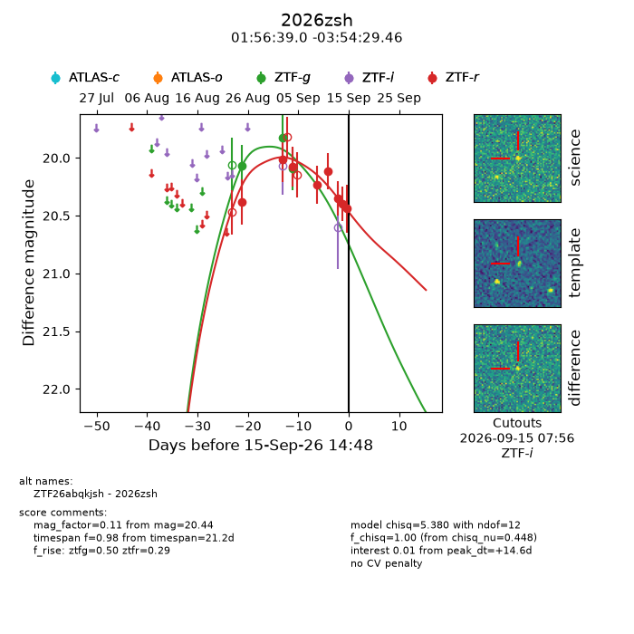
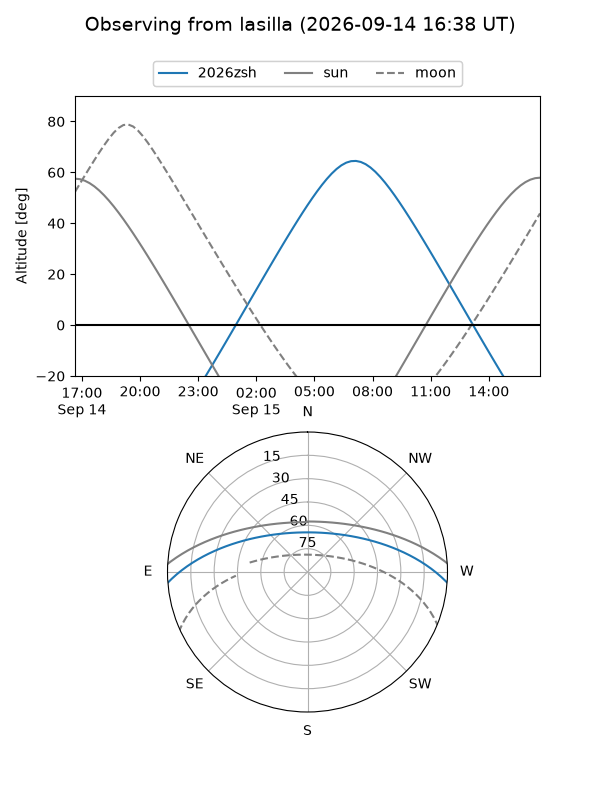
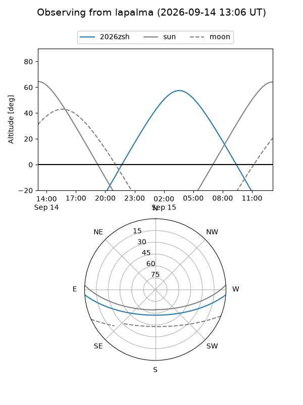
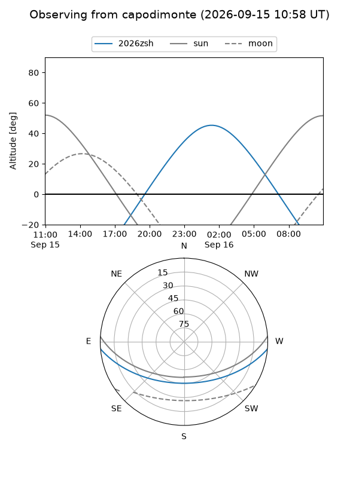
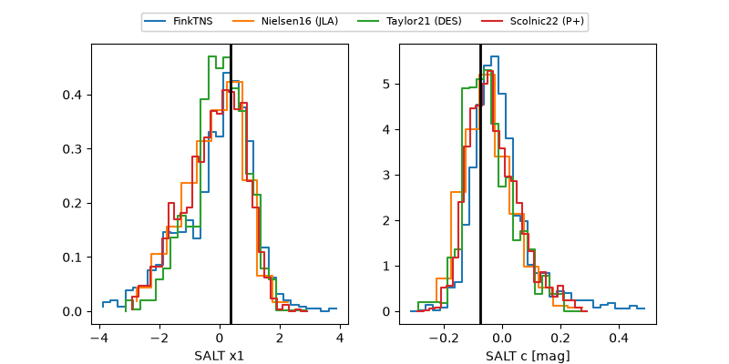

2026zsh
Target 2026zsh at 2026-09-15 14:50
Aliases and brokers:
FINK-ZTF: ztf.fink-portal.org/ZTF26abqkjsh
Lasair-ZTF: lasair-ztf.lsst.ac.uk/objects/ZTF26abqkjsh
ALeRCE-ZTF: alerce.online/object/ZTF26abqkjsh
YSE-PZ: ziggy.ucolick.org/yse/transient_detail/2026zsh
TNS name: wis-tns.org/object/2026zsh
Direct TNS query: direct search
alt names
ZTF26abqkjsh (ztf,fink_ztf)
2026zsh (tns,yse)
Coordinates:
equatorial (ra, dec) = 29.1626,-3.90818
equatorial (HMS+DMS) = 01:56:39.03,-03:54:29.46
galactic (l, b) = (159.6149,-62.04231)
Flags:
TNS type: nan
peak dt: +14.6
Photometry:
last ztfg=20.09, ztfr=20.44
3 ztfg, 8 ztfr detections
Lightcurve

Visibility



Additional plots
